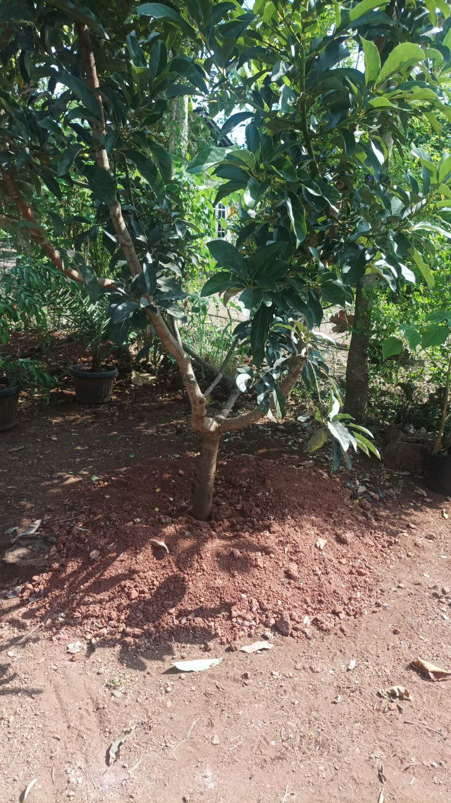

Info Tanaman Banyumanik

Alpukat
Kingdom: Plantae
Divisi: Tracheophyta
Class: Magnoliopsida
Ordo: Laurales
Famili: Lauraceae
Genus: Persea
Spesies: Persea americana
🌱 Budidaya
- Lingkungan: Dataran rendah–tinggi (200–1.500 mdpl), suhu ideal 20–30°C, sinar matahari cukup, tanah gembur & subur, pH 5,5–6,5.
- Penanaman: Jarak tanam 6 x 6 meter, ideal ditanam awal musim hujan.
- Perawatan: Siram teratur, beri pupuk organik & NPK, pangkas cabang rimbun, waspadai hama ulat, kutu putih, dan lalat buah.
💡 Fun Fact
"Lemak Baik untuk Otak & Jantung!" — Alpukat kaya lemak tak jenuh (omega-9) yang menurunkan kolesterol jahat dan baik untuk fungsi otak & jantung.
🍃 Manfaat
- Menjaga kesehatan jantung dan menurunkan kolesterol jahat.
- Kaya vitamin E yang baik untuk kulit.
- Budidaya menjanjikan karena nilai jual tinggi dan permintaan stabil.